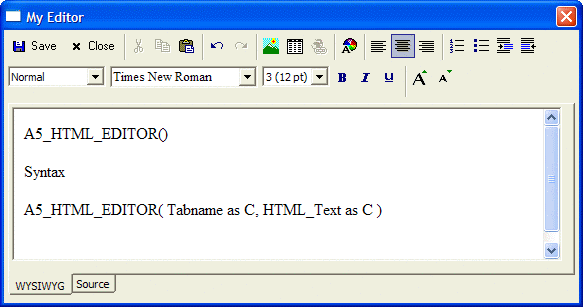

A5_HTML_MODELESS()
Syntax
A5_HTML_MODELESS( [ Html_Code as C [, Title as C [, Show_Source_Tab as L [, Read_Only as L [, Width as N [, Height as N[, Event_Handler as C [, Toolbar_Layout as C ]]]]]]]] )
Argument | Description |
Html_Code | Optional. Default = "". The HTML code of the page to be initially loaded into the editor upon launch. |
Title | Optional. Defaults = "HTML Editor". The dialog title of the window to be opened. |
Show_Source_Tab | Optional. Default = .T. A flag to control whether or not the editor should have a Source code tab. |
Read_Only | Optional. Default = .F. A flag to disallow editing of the displayed HTML. |
Width | Optional. Default = 110 (modal), 90 (modeless). Width of the HTML control in characters within the window. |
Height | Optional. Default = 10 (modal), 5 (modeless). Height of the HTML control in lines within the window. |
Event_Handler | Optional. The name of the function handling events. |
Toolbar_Layout | Not used. |
Description
The A5_HTML_MODELESS() function opens a generic modeless dialog containing an HTML editing control. They can be used as-is, but are particularly useful for use as embedded dialogs
Limitations
Desktop applications only.
Example
This example opens the HTML editor shown in the picture below.

dim cc as C cc = " cc = cc + " A5_HTML_EDITOR() Syntax "cc = cc + "A5_HTML_EDITOR( Tabname as C, " cc = cc + "HTML_Text as C ) "a5_html_modal(cc, "My Editor") ... do stuff ui_modeless_dlg_close("My Editor") |
See Also
A5_HTML_EDITOR(), A5_HTML_MODAL()